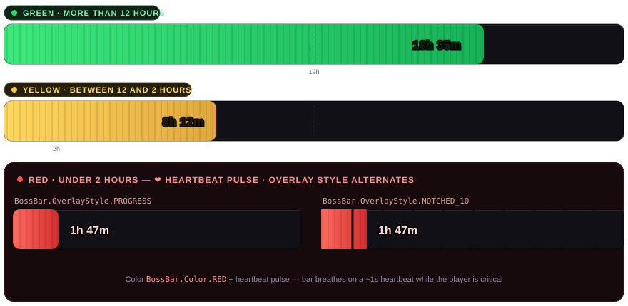
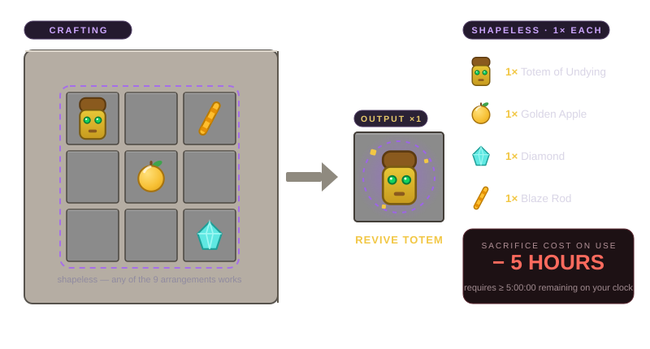

Your Minecraft life runs on a 24-hour clock.
Life-Clock SMP is a custom timer plugin for modern servers: every player holds a countdown clock, every kill moves hours between players, and the fallen become Ghosts — until someone pays the toll to bring them back. The timer keeps ticking. Do you spend your time living, or banking it for a friend's revival?
// The System
Time is the currency. Death is the tax.
Three rules power the whole game mode:
The Ever-Ticking Clock
Every player starts with 24 hours on their personal timer. It counts down in real time while they are online — pause the game of life at your own risk.
Ghost Mode
When the clock reaches 00h 00m 00s, the player is dropped into Spectator mode — a Ghost. They watch the server float past, clockless and helpless, waiting for a revival.
The Revive Rite
Craft a Revive Totem, target a Ghost, and sacrifice 5 hours from your own clock. Your ally returns to Survival with a fresh 2-hour clock. Mercy, at a price.
// The Hud
The countdown follows your eyes.
The timer is pinned to a BossBar at the top of the screen — never over the crosshair. Its color is the pressure gauge, and it turns critical long before zero does.

| Color | Remaining time | BossBar style |
|---|---|---|
GREEN | > 12:00:00 | Standard PROGRESS overlay |
YELLOW | 2:00:00 – 12:00:00 | Standard PROGRESS overlay |
RED | < 2:00:00 | Heartbeat pulse — overlay alternates between PROGRESS and NOTCHED_10 |
// Pvp Economy
Every kill is a transfer of time.
Combat has real stakes: hours leave one player's clock and land in another's.
🩸 The kill lands
The victim's clock instantly drops −2:00:00 per death.
⏱️ Time Clock item
The victor receives a physical Time Clock item, holding the victim's stolen hours.
🤝 Claim the reward
Right-clicking the Time Clock deposits +2:00:00 into the killer's clock.
Stored hours keep or die with you — bank them before someone collects your clock:
⏱️ Time Clock Right-click to claim your bounty Grants: +2:00:00// Necromancy
The Revive Totem — mercy for five hours.
A shapeless ritual recipe anyone can run at a crafting table. The totem itself is free to craft; the sacrifice happens the moment you use it on a Ghost.

| Step | Effect |
|---|---|
| Craft | Totem of Undying + Golden Apple + Diamond + Blaze Rod → 1× Revive Totem (no time cost to craft) |
| Check | Requires ≥ 5:00:00 remaining on your clock — under that, the totem refuses to activate |
| Use | Consumes 1× Revive Totem and deducts −5:00:00 from the user |
| Result | Target Ghost returns to Survival mode on a fresh 2:00:00 clock |
// Revive Interface
Pick your Ghost. Pay the toll.
Right-clicking a Revive Totem opens a 27-slot chest GUI titled "Select Ghost to Revive" — every currently spectating player appears as a custom player head with their death data attached.

Empty state
When nobody is spectating, the grid renders empty and the GUI shows a No Ghosts Available indicator instead of tempting you with dead air.
Chat-prompt search
Too many Ghosts? The Search icon opens a chat prompt — type the target's username and the GUI jumps straight to their head.